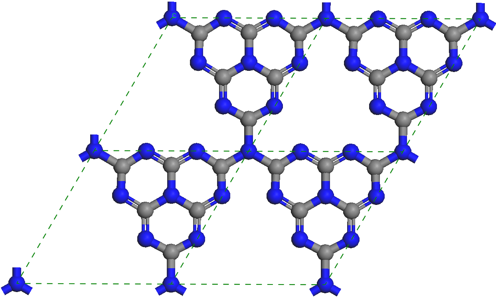
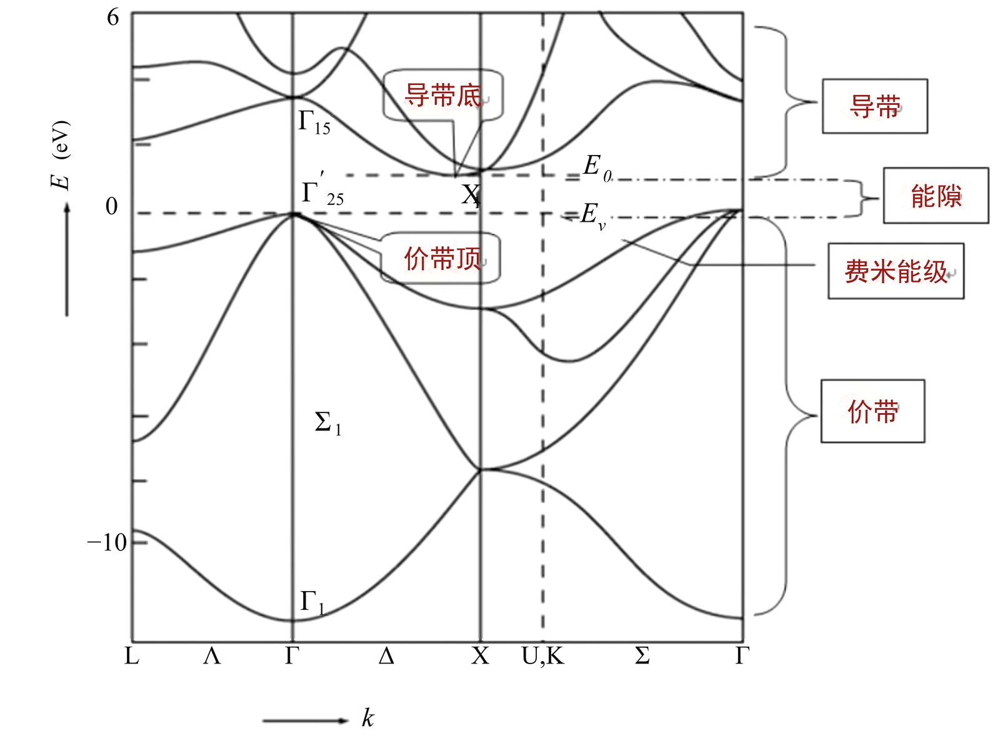
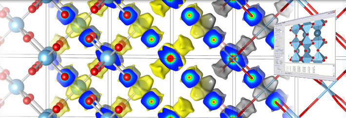
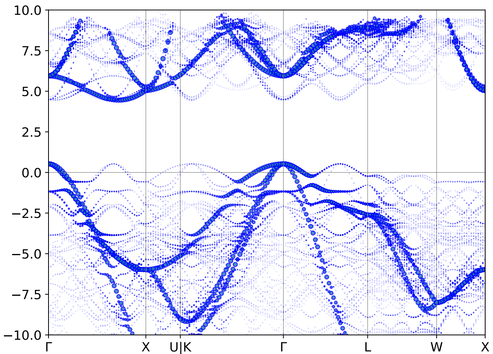

围绕"双碳"战略与未来能源方向，把整门《材料计算物理》课程微缩为一个完整的研究项目。
以"如何设计一种能高效分解水制氢的光催化材料"为总任务，学生扮演新能源材料企业研发工程师，按照企业"研究资料调研→计算筛选→方案优化→出具评估报告"的标准研发流程完成学习任务。
第一性原理计算集群机时成本高、试错不可逆，传统课堂学生"按方抓药"。本实验以虚拟仿真提供可重复、可承受的现实保障，支撑从验证性操作向研究探索性实验转变。
全部算例数据取自负责人省级科研项目与校高性能计算中心的真实计算结果，仿真严格遵循客观物理规律；实验不设唯一标准答案，学生数据互不雷同、结论互为印证。
依托学校网络中心智能体平台，构建"基础大模型 ＋ 材料计算知识库 ＋ 实验智能体"三层 AI 应用架构。
学生全程主导、AI 全程协同，完整经历真实研发全流程。
过程评价与结果评价结合，23 步赋分全过程留痕，动态生成学生能力画像与成长档案。
| 阶段 | # | 步骤名称 | 用时 | 满分 | 成绩类型 |
|---|---|---|---|---|---|
| 一、研究资料调研 预习成绩 8 分 | 1 | 预习测评与任务认领（研究资料调研） | 5 分钟 | 3 | 预习成绩 |
| 2 | 智能体研究资料调研 | 12 分钟 | 5 | 预习成绩 | |
| 3 | 智能体辅助方案设计 | 8 分钟 | 4 | 操作成绩 | |
| 4 | 智能体生成结构模型 | 10 分钟 | 5 | 操作成绩 | |
| 5 | 输入文件生成与核验 | 8 分钟 | 5 | 操作成绩 | |
| 二、提交计算 操作成绩 25 分 | 6 | AI 参数审查答辩 | 5 分钟 | 4 | 教师评价报告 |
| 7 | 截断能收敛测试 | 10 分钟 | 4 | 操作成绩 | |
| 8 | k 点收敛测试 | 8 分钟 | 4 | 操作成绩 | |
| 9 | 计算任务提交 | 3 分钟 | 3 | 操作成绩 | |
| 10 | 作业监控与 AI 报错诊断 | 12 分钟 | 5 | 操作成绩 | |
| 11 | 态密度后处理 | 10 分钟 | 5 | 操作成绩 | |
| 三、结果后处理 四、报告与反思 | 12 | 能带后处理 | 8 分钟 | 5 | 操作成绩 |
| 13 | 带隙提取与实验值比对 | 5 分钟 | 5 | 实验报告 | |
| 14 | 调控模型构建 | 10 分钟 | 5 | 操作成绩 | |
| 15 | 调控体系计算 | 15 分钟 | 5 | 操作成绩 | |
| 16 | 带边与光谱后处理 | 10 分钟 | 6 | 实验报告 | |
| 17 | 数据汇总与可行性论证 | 5 分钟 | 5 | 实验报告 | |
| 18 | 机器学习构效关系建模 | 10 分钟 | 5 | 操作成绩 | |
| 19 | 计算报告生成 | 课后 | 5 | 实验报告 | |
| 五、答辩反思 教师评价 9 分 | 20 | AI 报告点评与修改 | 课后 | 3 | 实验报告 |
| 21 | 小组答辩与同伴互评 | 10 分钟 | 4 | 教师评价报告 | |
| 22 | 反思与改进 | 课后 | 3 | 实验报告 | |
| 23 | 能力画像查看与拓展 | 5 分钟 | 2 | 教师评价报告 |
表 1 学生交互性操作步骤（按研究项目六阶段组织，共计 100 分）
取自教学与科研一线的真实计算结果，构成实验的算例库与知识库基础。


《材料计算物理》课程配套讲课稿与计算模拟视频——实验教学内容与算例库的直接来源。
《材料计算物理》第二章 · AI & 材料研发 第 4 节。以 CO2 分子为算例，讲解几何结构优化、差分电荷密度与分子轨道分析，演示计算模拟视频。
《材料计算物理》第六章 · AI & 材料研发 第 2 节。以诗词情境导入，讲解吸附机理与吸附能计算，Pt(111) 表面分子动力学模拟视频展示 CO / CO2 / H2O 吸附行为。

学生课前预习与课后回顾的完整操作录像（Materials Studio 建模 → 提交计算 → 能带 / 光谱后处理），共 6 讲，另含实验教学引导视频。
"AI 协同但不代劳"：训练学生批判性使用 AI 的素养与 AI 伦理意识。
智能体输出必须经学生核验、计算验证方可采信；学生须逐行说明计算参数物理含义、核验结构几何合理性方可提交，并以对照实验（AI 协同组 / 传统查阅手册组）量化 AI 的真实效用。
全部算例取自真实科研计算，仿真遵循客观物理规律；实验不设唯一标准答案，学生自主设计掺杂 / 缺陷 / 应变方案，数据互不雷同、结论互为印证。
23 步赋分评价模型覆盖预习、操作、报告与教师评价四类成绩，全过程留痕，动态生成学生能力画像与成长档案，支撑过程性赋分评价。
易文才 · 副教授 · 曲阜师范大学物理工程学院
主讲《材料计算物理》，研究方向：计算材料学与凝聚态物理；主持省级虚拟仿真实验教学项目与校级实验室教改项目，自主研发 qvasp、GSASP 等计算软件并获软件著作权。
算例库建设与集群教学环境维护 · 光学性质与光谱模块教学 · 虚拟仿真平台开发与 AI 接口技术支持。团队成员来自物理工程学院、实验教学与设备管理中心及合作企业。
邮箱：yiwc@qfnu.edu.cn
地址：山东省曲阜市静轩西路 57 号 曲阜师范大学物理工程学院
本平台面向校内《材料科学与工程专业实验Ⅰ》等课程开放，并按计划向高校与社会学习者开放共享。